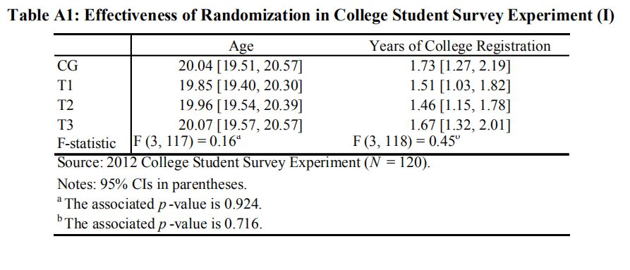
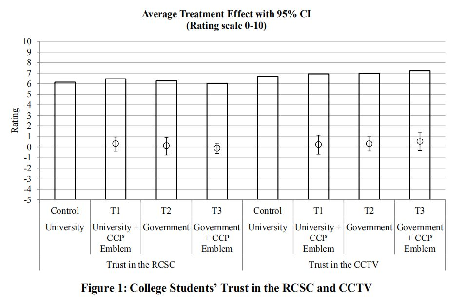
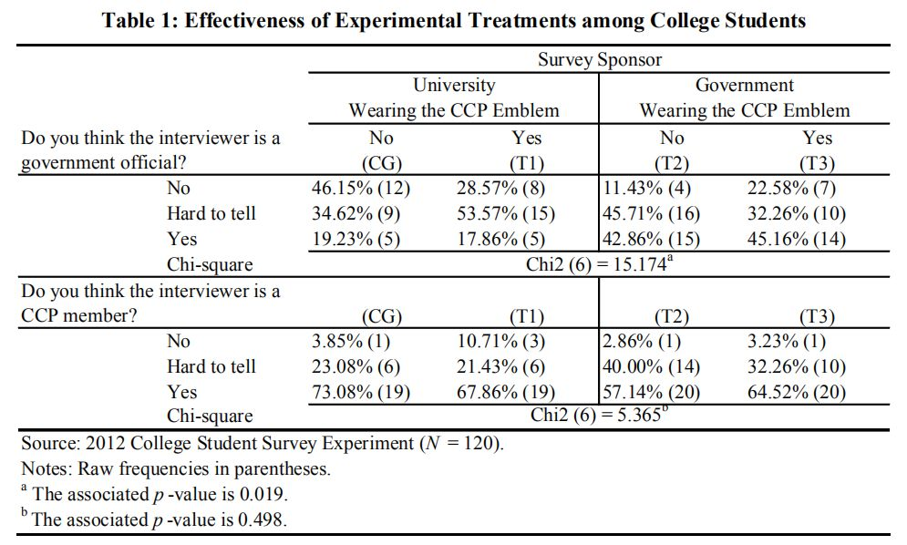
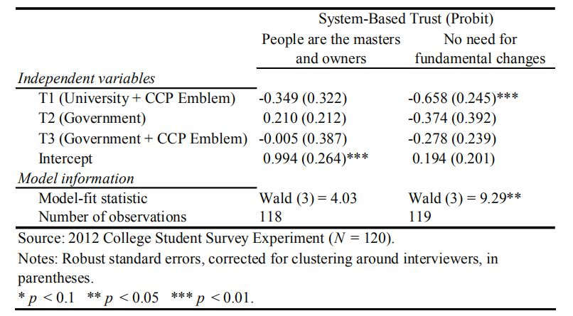
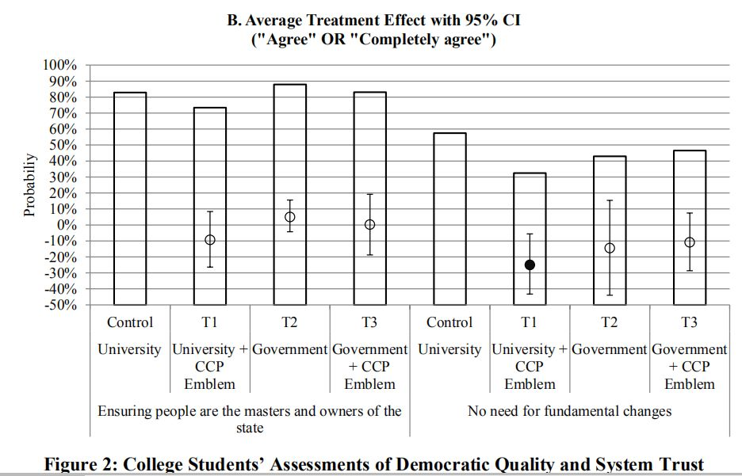

收录于合集
文献来源： Xuchuan Lei & Jie Lu, “Revisiting Political Wariness in China’s Public Opinion Surveys: Experimental Evidence on Responses to Politically Sensitive Questions,” Journal of Contemporary China , 2016, 26 (104) :213-232.
作者简介： 雷叙川，西南交通大学公共管理与法政学院副教授；吕杰：美利坚大学政治学系副教授
不同的调查项目（如ABS/WVS/CGSS）均显示中国公众的政治信任程度非常高，这一结论在外国学者看来是存疑的。他们首先质疑的就是数据的真实性问题（data integrity）。在西方的话语体系里，威权国家的政治压力足以让公众在政治敏感问题的回答中做出“政治正确”（politically correct）的回答。那么中国是否存在这种政治压力（political wariness）呢？来自西南交通大学的雷叙川副教授和美利坚大学的吕杰副教授2016年合作发表在 Journal of Contemporary China （《当代中国》杂志）上的文章，使用实验室实验和调查实验（survey experiment）相结合的方法，对中国公众在民意测量中是否受到政治压力的影响做了一定的探究。
一、既有研究中的缺陷
关于这一研究议题，大致可以分为两类。 一类是通过自评 （self-report） 的方式测量政治压力 ，以期发现政治压力与政府评价之间的关系，如Chen& SHI（2001）和SHI& Lou（2010）。史天健教授与其合作者完成的这两篇文章，均发现自评的政治压力和对政府的评价并没有显著的相关关系。这种方法面临的最大问题就是这种自评的政治压力是否有效？即面临建构效度的质疑（construct validity）。
第二类是基于项目反应理论 （Item Response Theory） ，对于回答 “ 不知道 ” （Do not Know，DKs） 答项的研究。 这类研究认为，对于政治敏感的问题，被访者可能会有更大的可能性选择不回答或者回答“不知道”，因此可以通过这部分答项去测量政治压力。但是，这里存在十分严重的效果识别问题，即回答“不知道”有可能是认知能力较差，确实不知道，不是我们所假设的“隐藏真实想法”那样。此外，也有可能是双重因素混合的结果。因此，如何把政治压力的影响从这部分选项中识别出来，是一个没有解决的问题。
关于这一议题，既有的基于观察数据（observational data）的研究均在方法上存在较为严重的缺陷。因此，作者在本文中通过实验的方法，试图解决这一问题。
二、实验方法
整个实验分为两部分，一部分是2012年针对在校大学生的实验室实验，第二部分是嵌入调查项目的调查实验。
1. 随机分组
按照实验方法的标准程序，对被访者随机分组，以期项目实验组和对照组在性别、年龄、专业、户籍等方面存在差异。下图是一个摘录，说明实验组和对照组在年龄方面并不显著差异。其他变量也类似。 说明随机分组有效。

2. 安慰剂检验（placebo test)
为了考察干预（treatment）的净影响（net effect），在询问受访者政治信任程度的同时，也询问了受访者对于中国红十字会和中央电视台两大机构的信任，其结果发现无论是否接受干预，被访者对这两项的回答并无显著差异。 安慰剂检验的结果说明，可以排除一些不可观察的变量，对于研究结论的影响。

**
**
3. 实验组和控制组
控制组（control group）：调查员按照ABS标准的问卷访问程序，分别询问受访者对中国民主程度的评价、政府机构的信任程度，以及对“我国人民是国家和社会的主人”、“中国的政治制度不需要彻底的改变”这两个问项的看法。这些测量都是目前大规模调查的常用测量方式，目的是为了和既有的数据和研究进行对话。
实验组1（Treatment 1） ：问卷问题和控制组是完全一样的，只不过访员在调查开始之前，明确的表示“这一调查是有XX 大学资助 的，纯粹学术研究性质的调查”。通过这种方式，以期营造相对宽松的环境。
实验组2（Treatment 2） ：访员在访问之前明确表示，这是一项由 政府资助 的研究，目的是了解社情民意。
实验组3（Treatment 3） ：访员表示这是一项由 政府资助 的科研项目，并且访员身着学校行政领导的正式着装，与此同时 佩戴党徽 ，以期塑造政府官员的形象，造成“政治压力”。
从上述实验过程可以发现，政治压力（political wariness）是核心干预（treatment），作者实际上是通过访问开始前的介绍和访员的特征来实现的。在访问结束后，研究人员再次对被访者进行了问卷调查， 询问他们是否相信佩戴党徽的是党员或者政府人员，结果显示这种刺激比较有效。
实验方法需要回答的一个问题就是“干预”（treatment）是否有效。作者在问完敏感问题之后，询问了被访者是否相信访员是党员或者政府官员， 结果显示在实验组的被访者有更多的人相信访员就是党员或者政府官员，一定程度上说明作者施加的刺激是有效的。

以上实验过程是针对在校大学生的实验室实验，目的是为了获得较好的内在效度（internal validity），另一组试验是嵌入到一次大型社会调查当中的田野实验（fieldexperiment），目的是获得更好的外在效度（externalvalidity）和结论的可推广性（generality）。田野实验的程序和步骤与实验室实验基本一致，研究人员对干预做了一定程度的简化。
三、主要发现
1. 中国公众面对敏感问题的回答是真实的，政治压力并没有产生影响。
下图是一个摘录，受访者被询问的是被对于政治体系的信任。可以发现， 政治压力并没有带来更高的信任度。 唯一显著的结果是T1对于“我国的政治制度不需要彻底变革”的负向影响。这一负向影响的含义是，如果访员是党员，那么被试对于政治系统的评价更低。这一显著的结果更加说明了被试并没有做出政治正确回答的压力。

2. 实验组表现出更低的政治信任度，对敏感问题的主观评价更加负面。
在个别问项中，实验组表现出显著更低的政治信任度，有一定反常识的意味，这也是这一研究具有冲击力的一方面。 正如作者指出，这一现象的机制解释，需要更加深入的研究。

编后记：
10余年来，学术界关于政治支持与政治信任的研究已经成果丰硕，雷叙川和吕杰两位老师在这篇文章中采用了最前沿的实验室实验和田野实验相结合的方法， 初步验证了中国公众在接受问卷调查时做出的回答具有较高的可信度，有力地反驳了西方学界看待中国的一贯偏见态度 （此外，美国爱荷华大学政治学系唐文方教授在2016年由牛津大学出版社出版的专著 ** Populist Authoritarianism:Chinese Political Culture and Regime Sustainability** 中的第8章也运用调查数据和实验方法对公众是否隐藏偏好做了详细探讨，指出中国公众较高的政治信任是可信的 ）。当然，作者通过这篇文章发现的一些其他有趣的线索，值得进一步的探寻。我们相信，随着理论建构的日臻成熟与研究方法的不断进步，对政治支持与政治信任的研究将有更大的广阔空间。

政观编辑部
感谢您支持学术公益
微信扫一扫赞赏作者 __赞赏
已喜欢，对作者说句悄悄话
取消 __
发送给作者
发送
最多40字，当前共字
上一页 1/3 下一页
长按二维码向我转账
感谢您支持学术公益
受苹果公司新规定影响，微信 iOS 版的赞赏功能被关闭，可通过二维码转账支持公众号。